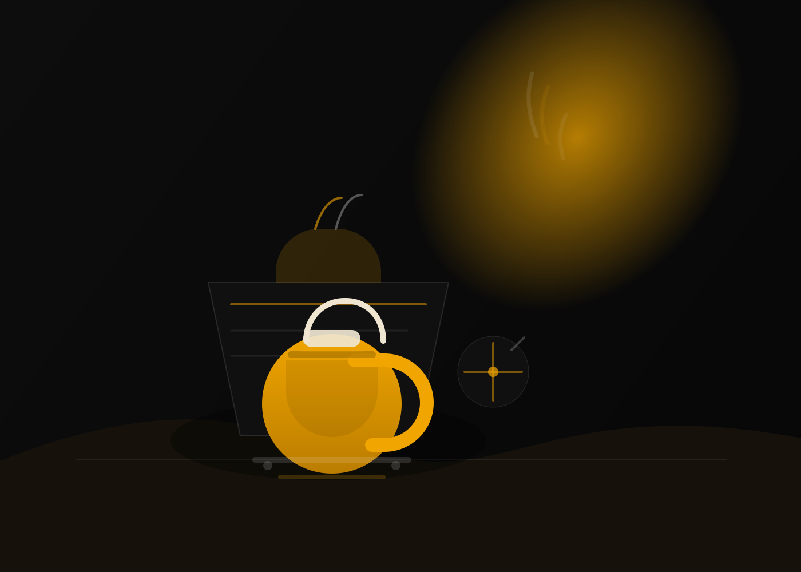

Story / About
Built for pasalubong, made for the long stop.
Catalina's Bakeshop Cafe sits in Bancao-Bancao with the kind of menu that works two ways: fresh pastries for the take-home box, and savory cafe plates when the trip turns into a sit-down meal. Guests repeatedly mention warm pastries, good coffee, and a relaxed place to linger.
The public profile copy says it plainly: home of the best pasalubong from Puerto Princesa. This page keeps that focus front and center, with the real address, hours, and the menu names people keep sharing online.